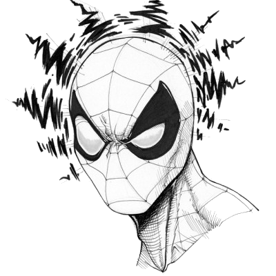

| Sample | X1 | X2 | M |
|---|---|---|---|
| 1 | 60 | 60 | 60 |
| 2 | 62 | 60 | 61 |
| 3 | 64 | 60 | 62 |
| 4 | 66 | 60 | 63 |
| 5 | 60 | 62 | 61 |
| 6 | 62 | 62 | 62 |
| 7 | 64 | 62 | 63 |
| 8 | 66 | 62 | 64 |
| 9 | 60 | 64 | 62 |
| 10 | 62 | 64 | 63 |
| 11 | 64 | 64 | 64 |
| 12 | 66 | 64 | 65 |
| 13 | 60 | 66 | 63 |
| 14 | 62 | 66 | 64 |
| 15 | 64 | 66 | 65 |
| 16 | 66 | 66 | 66 |
Recap
- \(z\)-scores, normal distributions, probability
- \(z = \dfrac{X - \mu}{\sigma}\)
- \(z\)-scores reflect position in population distribution
- Find probabilities using Unit Normal Table /
pnorm()

Recap

- Sampling distribution
- Find probabilities of sample means

\(p(M < 61) =\ ?\)
Together…
- Sample statistics, normal distributions, probability, Central Limit Theorem
- We can find \(z\)-score for any sample mean
- Using characteristics of sampling distribution of the mean \((\mu_M\) and \(\sigma_M)\)
- Position of given sample mean in the population of all possible sample means
- Then find probability (using Unit Normal Table /
pnorm(), just like for regular \(z\)-scores)
\(z = \dfrac{M-\mu_M}{\sigma_M}\)

Inferences: Spiderman
- Are Peter Parker’s RTs “noticeably different?”
- \(z = -2.5\)
- Can state precise probability of observing a \(z\)-score that (or more) extreme


2. Decision criterion
- Divide distribution of sample means into two parts
- Outcomes likely if \(H_0\) is true
- Outcomes unlikely if \(H_0\) is true
- Boundaries for critical region(s) determined by alpha

2. Decision criterion
- Directional tests
- Researcher has a specific prediction about the direction of the treatment
- Specifies (in advance) looking for increase or decrease

- Nondirectional tests
- Looking for a difference in either direction
4. Make decision
- Two possible outcomes:
- If the sample statistic is not located in critical region(s)
- Fail to reject null
- Meaning there does not seem to be an effect
- Sample statistic is located in critical region(s)
- \(p < \alpha\)
- Reject null
- Meaning there does seem to be an effect
- If the sample statistic is not located in critical region(s)